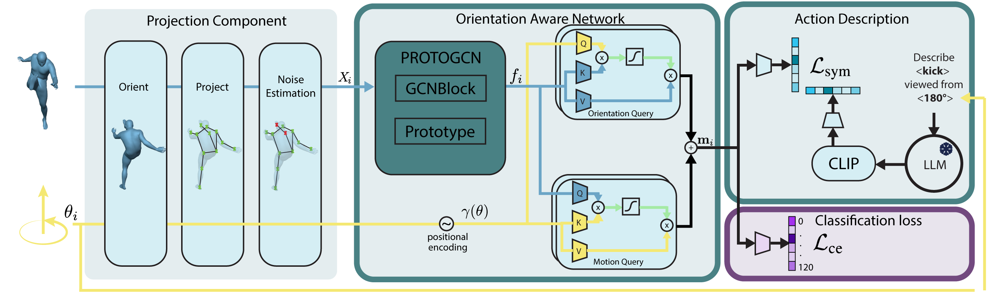
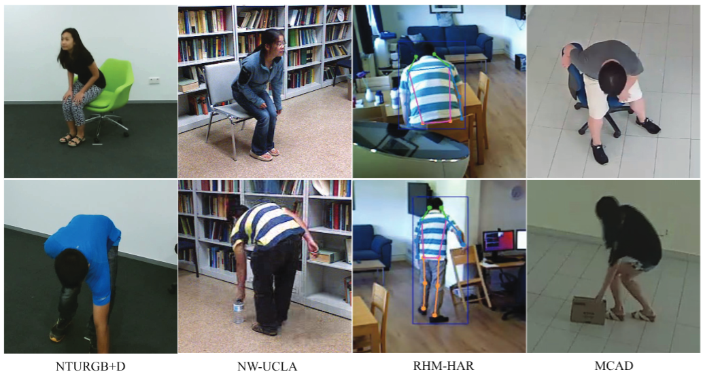

Cross-domain action recognition is a key capability for effective deployment of human recognition systems to be deployed in real-world scenarios, where action categories at inference can present important domain shifts or even unseen actions from training. In this context, improving the recognition capabilities of Zero-Shot Action Recognition (ZSAR) without requiring additional annotated samples remains a central challenge. However, most existing zero-shot approaches assume that unseen actions are observed under geometric conditions similar to those seen during training. In practice, variations in human body orientation and camera viewpoint introduce a significant gap in ZSAR, substantially limiting generalization to novel action–motion combinations. Our approach leverages motion cues of multiple camera viewpoints and text descriptions of human actions in the training phase. We present a new orientation-aware motion encoding network to learn different motion features, and adapt a specific orientation-aware text prompt to match the corresponding features at inference. Extensive experiments demonstrate that the proposed method consistently improves ZSAR performance across varying numbers of views and text prompts, outperforming recent state-of-the-art zero-shot approaches on NTU-RGB+D, BABEL, NW-UCLA, and two surveillance benchmarks. In addition, the learned representations exhibit strong transfer learning capabilities, yielding competitive performance on both cross-domain and same-domain recognition of seen actions. Code and trained models will be released.
